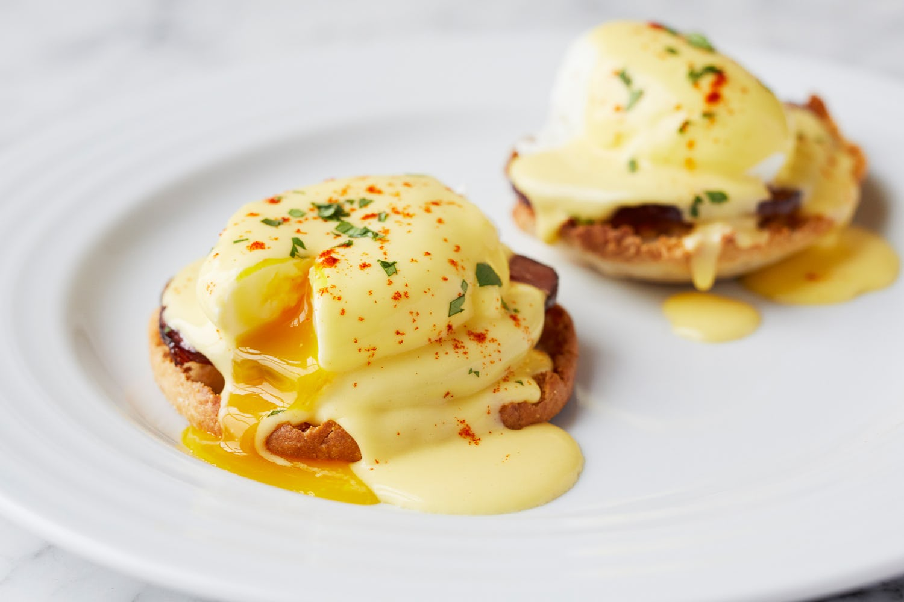

Indigo Brunch Menu
Benedicts
Served with potatoes or sub fruit
Classic
With ham and traditional hollandaise
Fried Chicken
Homemade fried chicken topped with your choice of hollandaise or country gravy
Smoked Salmon
With house applewood smoked salmon hollandaise
Avocado Roma
Avocado a slice of Roma tomato hollandaise
Read More
Benedicts
